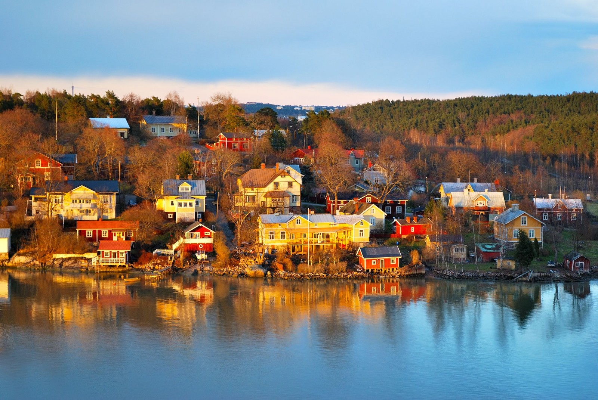

Locate Your Destination
CONTINENT
Asia
Republic of Maldives
Maldives
China
Hong Kong
Taiwan
Europe
France
Paris
Italy
Venice
Finland
Helsinki
Greece
Greece
Spain
Barcelona
UK
London
Hungary
Prague
Australia
Sydney
North America
Cuba
Cuba
Canada
Vancouver
Maui
Maui
|
Helsinki
Country: Finland
Rank:4
Tag:Natural; Greens; Snow; Wildlife

It’s fitting that harbourside Helsinki, capital of a country with such watery
geography, melds so graciously into the Baltic. Half the city seems liquid, and
the writhings of the complex coastline include any number of bays, inlets and
islands.
Though Helsinki can seem a younger sibling to other Scandinavian capitals, it’s
the one that went to art school, scorns pop music and works in a cutting-edge
studio. The design scene here is legendary, whether you're browsing showroom
brands or taking the backstreet hipster trail. The city's gourmet side is also
flourishing, with new gastro eateries offering locally sourced tasting menus
popping up at dizzying speed.
Nevertheless, much of what is lovable in Helsinki is older. Its understated yet
glorious art-nouveau buildings, the spacious elegance of its centenarian cafes,
dozens of museums carefully preserving Finnish heritage, restaurants that have
changed neither menu nor furnishings since the 1930s: all part of the city’s
quirky charm.
People who have been to Maldives:
-
By Andy Symington, Writer:
My first impression of Finland was a winter one, when snow-hushed forests and
Christmastime conviviality made an instant impact. You must come back in summer,
everyone said, so I did, for midnight daytime saunas by impossibly picturesque
lakes and melt-in-the-mouth fresh berries and potatoes. Fresh air, the Lapland
wilderness, the hiking, the wildlife: it's a natural wonderland within an
impressively technological modern nation. The real bonus? The Finns, who do
their own thing and are much the better for it. Independent, loyal and welcoming
– memorable people in an inspirational country. Make it your business to get to
know some.
reviewID:r4
Highlights:
-
City Lights
Don’t get the idea that the country’s just a backwoods emptiness, though.
Vibrant cities stock the southern parts, headed by the capital, Helsinki, a
cutting-edge urban space with world-famous design and music scenes. Embraced by
the Baltic, it’s an enticing ensemble of modern and stately architecture, island
restaurants, and stylish and quirky bars. And complaints about Finnish food are
so last century: the ‘new Suomi’ restaurant scene is kicking, with locally
foraged flavours to the fore.
-
Call of the Wild
The Finland you encounter will depend on the season of your visit, but whatever
the month, the call of the wilderness is a siren song not to be resisted.
There’s something pure in the Finnish air and spirit that’s really vital and
exciting; it’s an invitation to get out and active year-round. With vast tracts
of forest, speckled by picture-perfect lakes as if an artist had flicked a blue
paintbrush at the map, Suomi offers some of Europe’s best hiking, kayaking and
canoeing. A fabulous network of national parks has well-marked routes and
regularly spaced huts for overnighting. Bears and elk deep in the forests can be
observed on nature-watching trips.
-
Summer Days
Finland’s short but reliable sunny season sees the country burst into life.
Finns seem to want to suck every last golden drop out of the summer in the hope
that it will last them through the long dark winter months, and there’s an
explosion of good cheer and optimism. It’s a time for music festivals, art
exhibitions, lake cruises, midnight sunshine on convivial beer terraces, lazy
days at remote waterside cottages and mouth-watering market produce.
Things To Do:
- Temppeliaukion Kirkko
address: Lutherinkato 3, Helsinki, Finland moreInfo:www.helsinginseurakunnat.fiopenHours: 10am-5.45pm Mon-Sat, 11.45am-5.45pm Sun Jun-Aug, to 5pm Sep-May
- Ateneum
address: Kaivokatu 2 openHours: 10am-6pm Tue, Fri, 9am-8pm Wed,Thu, 10am-5pm Sat,Sun
People who like this place also like to go to:
Cuba
Barcelona
source:
Lonely Planet:
www.lonelyplanet.com/
|